Customer Requests & Self-Service
Online ordering, booking, intake, service requests, customer portals, and other tools that let customers get things done without making a phone call.
I help established brick-and-mortar businesses streamline repetitive processes and communications through custom web and mobile software.
I turn everyday business operations into simpler online workflows — from customer requests, ordering, booking, scheduling, delivery and fulfillment to job updates, staff tools, service management, document and media sharing, administrative systems, and other custom automation that saves time and makes the business easier to run.
What I Build
Online ordering, booking, intake, service requests, customer portals, and other tools that let customers get things done without making a phone call.
Scheduling, dispatch, appointments, job management, progress tracking, and tools that help staff manage work from request through completion.
Pickup, delivery, order fulfillment, tracking, driver workflows, and customer status updates.
Detailed forms, structured information gathering, photos, videos, documents, reports, file uploads, and secure sharing.
Administrative portals, dashboards, approvals, reporting, customer management, job processing, and other internal tools.
Status notifications, email and push updates, reminders, approvals, follow-ups, and automation that reduces repetitive communication and manual work.
If part of your business still relies heavily on phone calls, emails, spreadsheets, paperwork, or employees manually moving information from one place to another, there may be a simpler way to handle it.
About Me
I've been building software for more than 25 years, working in environments ranging from Silicon Valley startups to large international companies.
What I've always enjoyed most isn't technology for its own sake. It's finding something that's frustrating, repetitive, or unnecessarily complicated and making it easier.
I like software that has a clear purpose: helping a customer place an order without making a phone call, giving an employee the information they need while they're on the road, keeping everyone updated without another round of emails, or turning paperwork and repetitive administrative work into a straightforward online process.
I also believe business software should stay as simple as the problem allows. My goal isn't to introduce more technology into your business. It's to use the right amount of technology to save time, reduce friction, and make the work easier for the people actually using it.
Selected Work


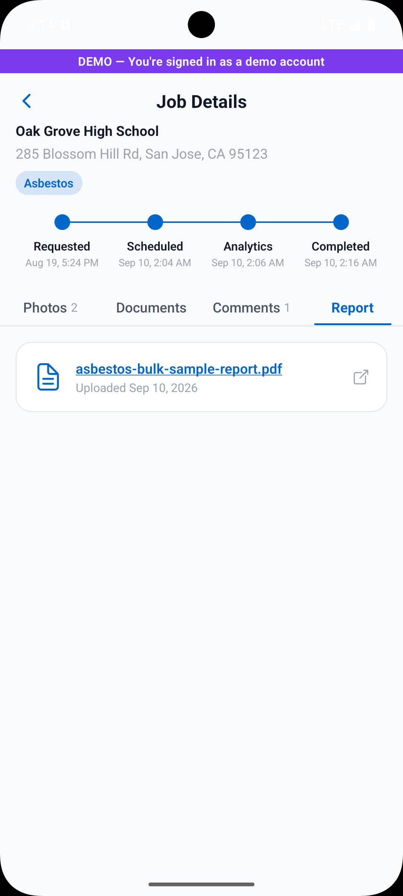
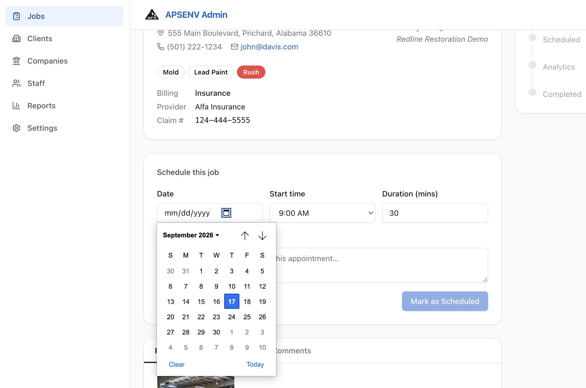
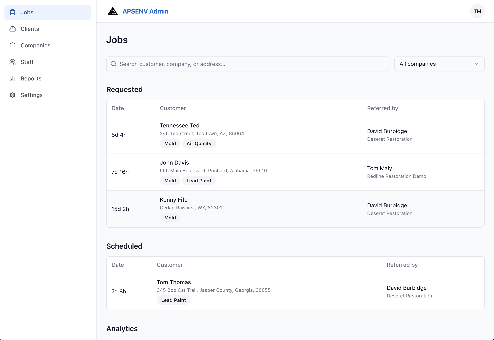
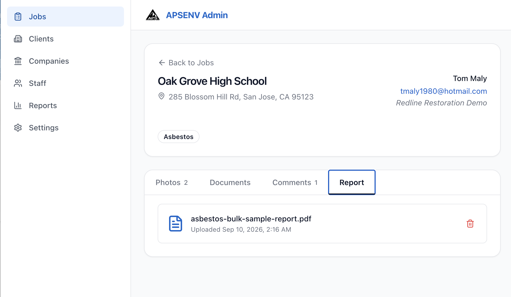
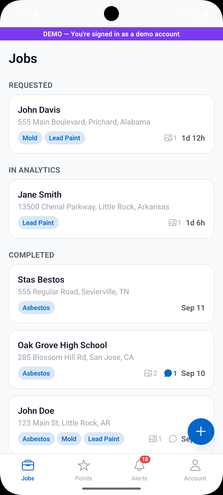
APS Environmental Services
APS needed a better way for business customers to request environmental testing services and stay informed as those requests moved through the testing process.
I built a customer-facing mobile application for submitting detailed service requests, sharing photos and documents, and receiving status updates through push notifications and email.
A companion administrative website allows APS personnel to review and process incoming requests, schedule appointments, update job status, upload completed reports and supporting documents, and manage the workflow from submission through completion.
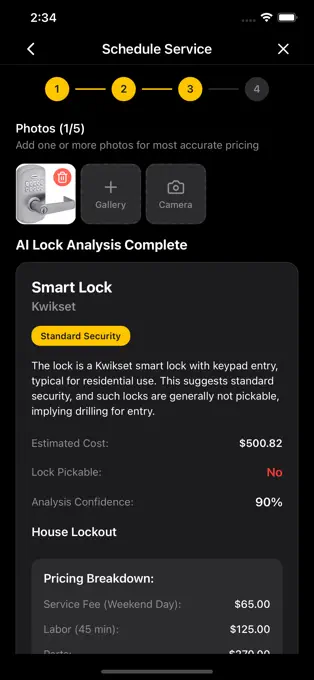
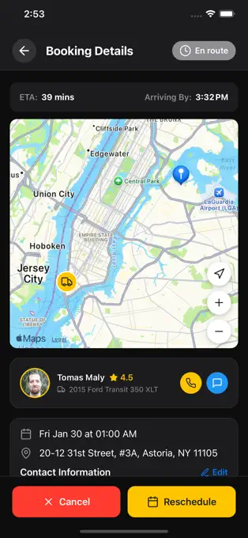
LockAtlas
LockAtlas connects customers who need locksmith service with technicians who can perform the work.
Customers can submit detailed service requests, share photos, communicate with technicians, receive job updates, and track the progress of their request. Technicians receive nearby jobs, review customer information, communicate through the application, and manage the service workflow through completion.
The system also handles customer payments and technician payouts as part of the completed service process.
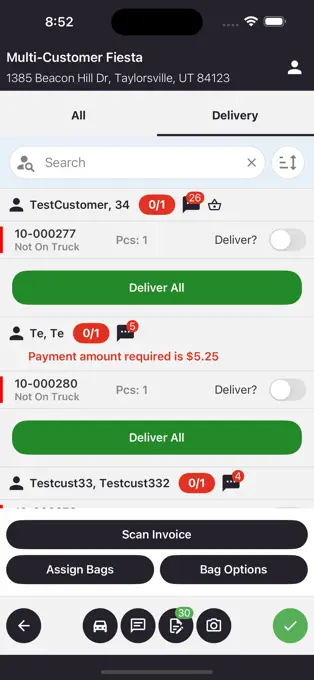
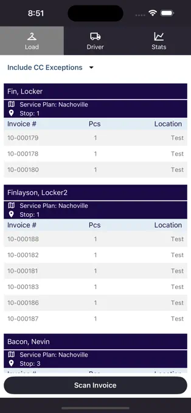
Spot Delivery Connect Mobile
Mobile software used by dry-cleaning delivery operations to manage customer pickups, garment scanning, deliveries, and day-to-day driver workflows.
The application was designed to continue functioning even when drivers lose internet access, allowing employees to keep working on the road and synchronize their activity once a connection becomes available.
I led a major rebuild of the application and its mobile workflow while working at Xplor Technologies.
More Work
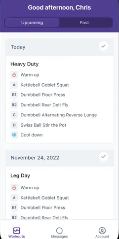
Fitness coaching platform helping coaches and clients manage programs, communication, and progress without a manual back-and-forth process.
App Store ↗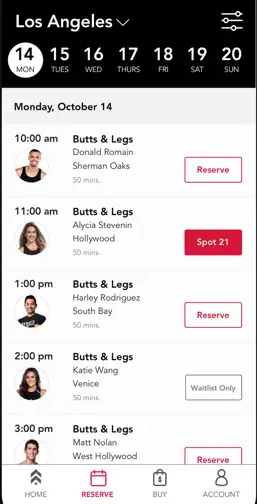
White-labeled fitness studio software for booking, billing, and scheduling across a large network of client businesses.
Example app ↗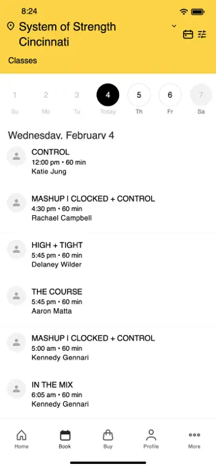
Custom-branded scheduling and member-management software for fitness businesses that needed a repeatable, scalable client experience.
Example app ↗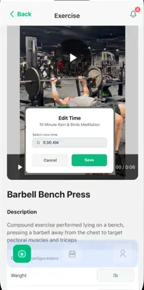
Wellness planning app that gave users a simple way to organize routines, habits, and personalized guidance around their goals.
App Store ↗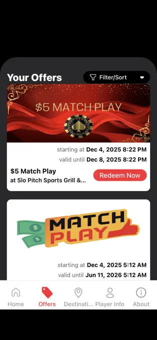
Casino rewards and engagement app designed to give members a simpler way to find offers, redeem perks, and manage ongoing loyalty activity.
App Store ↗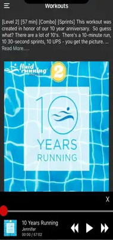
Instructor-led aquatic workout software that simplified access to media, sessions, and guided fitness content on mobile devices.
App Store ↗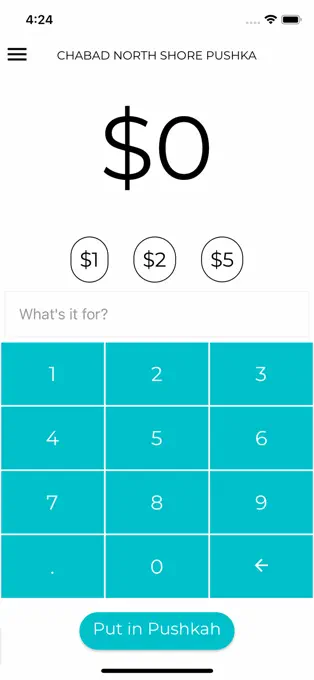
Branded donation and charity app used by organizations that needed a repeatable digital giving experience across multiple audiences.
App Store ↗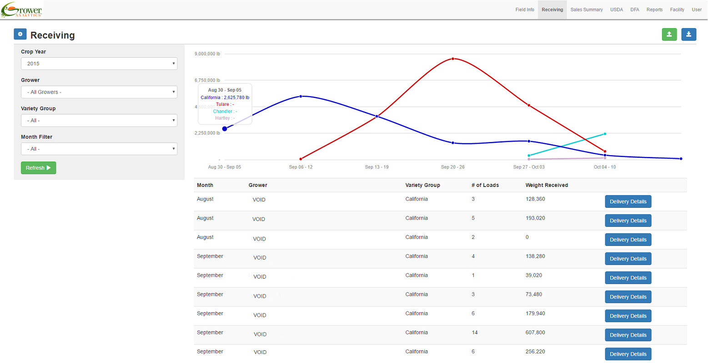
Data and reporting platform for growers who needed a clearer way to manage crop and yield information across multiple sites.
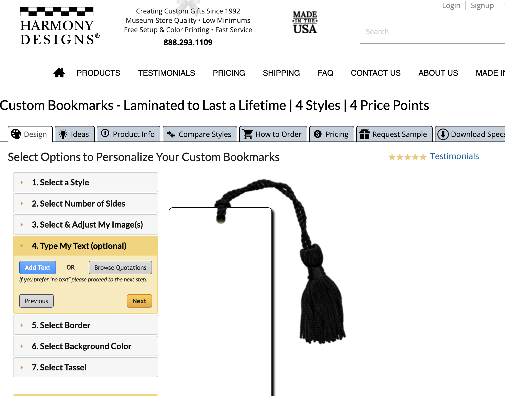
E-commerce and order-management system for a custom goods business that needed a clearer way to manage personalized orders and payments.
FAQ
Working together
I build custom web and mobile software around existing business processes — including customer ordering and service requests, scheduling, job management, delivery and fulfillment, customer and staff portals, administrative tools, forms, notifications, document and media sharing, and other workflow automation.
If part of your business still depends heavily on phone calls, email, spreadsheets, paperwork, or staff manually moving information between systems, there may be an opportunity to make that process easier.
No.
You should be able to explain how your business works, what you want to improve, and what customers or employees need to be able to do.
I'll determine the appropriate technical approach and explain any decisions that affect your business.
Mostly, I need to understand the business process.
Existing forms, spreadsheets, screenshots, documents, examples of how staff currently handle the work, branding assets, and access to systems that need to be integrated can all be useful.
You do not need to prepare a technical specification before contacting me.
Before development starts, we'll agree on the project scope, milestones, deliverables, and pricing.
I generally request 25% at the beginning of the project.
Projects are then divided into clearly defined milestones. For many shorter projects this means approximately four major milestones. Projects lasting three months or longer will generally use approximately two milestones per month so progress and payments stay predictable.
Milestone payments are due when the milestone is completed and before development begins on the next milestone.
I generally use Contra.com for payments because it is easy for clients to join and offers low-fee payment options.
I generally try to provide testable software within the first two weeks.
I prefer an ongoing feedback process rather than disappearing for months and revealing the finished product at the end.
You'll be able to see and use working software early so we can identify misunderstandings, improve workflows, and make smaller adjustments while those changes are still easy to incorporate.
Small adjustments and clarifications are a normal part of the testing and feedback process, and I generally incorporate reasonable in-scope changes as development progresses.
If a change significantly expands the original requirements or introduces a new feature that wasn't part of the agreed project, we'll define the additional work as a new milestone with its own scope and budget before I begin it.
Technical & project details
My current work primarily uses:
React, Next.js, React Native, Expo, TypeScript, Node.js, Supabase, PostgreSQL, Firebase, Swift, and SwiftUI.
I've worked with many other platforms and technologies during more than 25 years of software development, so I choose tools around the needs of the project rather than forcing every business into the same technical solution.
A basic mobile application with clear, well-defined features will commonly take approximately 4–6 weeks to develop.
More complex applications may take longer depending on the number of workflows, integrations, administrative features, or external services involved.
Mobile app review and release may require an additional 1–2 weeks, depending on Apple or Google review times and whether they request any changes.
Early mobile testing generally happens through Apple TestFlight and Google Play testing releases.
You'll be able to install the application on real phones, use it yourself, and provide feedback before anything is made publicly available through the app stores.
Depending on the project, the software may require accounts for hosting, databases, Apple or Google developer programs, email delivery, text-message delivery, payment processing, mapping, file storage, and other third-party services.
I'll explain what each account is for, why it is needed, and walk you through creating it.
Often, yes.
If an existing service provides a usable API or other integration method, I can often connect new software to services your business already depends on instead of replacing everything.
Where appropriate, yes.
I build administrative tools that allow employees to handle normal day-to-day operations themselves, such as processing customer requests, changing statuses, scheduling work, uploading documents, managing customers, and completing normal administrative tasks.
Ownership & ongoing
You do.
Your project's source code will be stored in a GitHub repository that you own.
I'm also happy to sign reasonable NDA, confidentiality, intellectual-property, and work-for-hire documents as required by your business.
Bugs in functionality included in the agreed project scope are covered for 30 days after launch, unless we agreed to different support terms before the project began.
If something that was included in the agreed requirements is not working correctly, I'll fix it during that period without treating it as a new feature.
The software remains yours, and there is no requirement to keep me on a monthly contract.
I'm available when you need additional features, integrations, maintenance, platform updates, workflow changes, or other improvements.
I work primarily with American companies and structure my availability so I can coordinate during normal U.S. business hours.
I'm based in both Central Arkansas and Western North Carolina, and I'm available across both Central and Eastern time zones.
I generally respond the same business day to messages received before approximately 3:00 PM Eastern Time.
Messages received later in the day will generally receive a response the following business morning.
Contact
If there's something your customers or employees are still handling through phone calls, email, paperwork, spreadsheets, or disconnected tools, I'd be happy to talk about whether custom software could make it simpler.